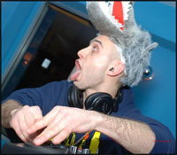

Throdown
ONE LOVE MASSIVE
http://www.myspace.com/djthrodown
In an era oversaturated with redundant, sound-alike DJs, look no
further than DC’s own DJ Throdown to deliver an action packed,
one-of-a-kind show that fans all over the tri-state area have come to
eagerly anticipate. Equipped with heavyweight tunes and an incredible
display of stylish turntablism and musical command, Throdown has won
over audiences from the east coast to the west, and is only just
beginning to “get in the zone.”
With nearly a decade of experience behind the 1’s and 2’s, Throdown is
no amateur; his journey has led him far and wide across the musical
spectrum. It was the raw style and unlimited creativity of hip hop
culture that inspired him to procure his first set of decks at the
turn of the century. Only a few years later he could be seen
dominating the college party circuit every weekend at Virginia
Commonwealth University in Richmond. Rolling up to every function in a
station wagon packed with oversized speakers, turntables, records,
mics and MC’s, one local rhymesayer regularly referred to Throdown and
his entourage as a “hip hop starter kit.” Soon Throdown graduated to
college radio, landing a prime slot at 9pm every Friday night on WRIR
97.3 with his immensely popular show The Vinyl Cartel, the brainchild
of himself and longtime partner Lord Organik. On the road, Throdown’s
unique showcases landed him solo gigs alongside Wu-Tang Clan, Cage,
Afu Ra, & People Under The stairs. The talented performer’s reputation
spread further by backing up several local hip hop acts, most notably
The Echo Boomers, a northern VA rap sensation with whom he won 2
Richmond crew battles in 2005-06, and shared stages with national hip
hop acts such as Akrobatik & Mr. Lif, MC Chris of Cartoon Network
fame, and even Vanilla Ice.
As his confidence grew, Throdown set out in pursuit of more solo
opportunities. He conquered a DJ battle in 2006 at VCU, another battle
of Richmond city in 2008, and took up residency at Konrete Jungle RVA.
His musical horizons began to expand into the realm of electronic
music, and he found himself frequenting clubs in Baltimore & DC, DJing
with Krafty Kuts, Stanton Warriors, Ewun, & DJ Assault. His continued
expertise in turntablism made him a crowd favorite at the 2010 Miami
Winter Music Conference DJ battles, and has gotten him booked with The
X-Ecutioners, DJ Lord from Public Enemy, and Craze & Klever from the
Allies crew (his two FAVORITE DJs of all time!).
In 2008 Throdown crossed paths with the mighty PLF crew of Richmond
notoriety, a diverse collective of carnival performers including fire
spinners, aerial silk dancers, 3D visual artists, hula hoopers, a
burlesque act, and bad ass DJs to top it off. He eagerly joined their
ranks, and soon developed an affection for rocking parties in
eccentric, utterly ridiculous costumes. It was here, drawing on his
newfound alliance with PLF as well as his background in entertainment
and visual & performing arts, that Throdown discovered the true
character in himself that he was destined to share with the world.
Nowadays, a Throdown showcase is not complete without polka dot ties,
gold chains, laser guns, and balloon animals.
In 2011 Throdown’s resume boasts several not-so-common achievements,
including his specially featured scratch performances in collaboration
with several regional music acts. Among others, this includes The
Bakz, a Centreville-based metal/go-go fusion band; The Black
Orchestra, a division of the VCU Symphony; and Jon Q, a Richmond
beatboxer phenomenon. Throdown’s abilities have brought him as far as
San Diego, Reno, Vegas, New York, North Carolina, & Miami. Since
returning to the DC area and its hip hop scene, Throdown is excited to
work again with old acquaintances and long t ime hip hop fixtures
Educated Consumers, Resination, Flex Matthews, Damu the Fudge Monk, DJ
Obeyah (formerly of Mic The Finite & DJ Sound), DJ Ragz, Mudd, & The
Unkown. As of late, Throdown has been focusing heavily on studio work
and original productions, so be on the lookout very soon for some
Thro-bangers to take over a boombox near you!